Biosecurity Fellowship
About
Biosecurity is the work of anticipating and preventing biological threats, from natural pandemics and laboratory accidents to the deliberate misuse of biotechnology and AI. Despite the field's growing importance, there has been no formal pathway for Harvard undergraduates to engage with it. The Harvard Undergraduate OpenBio Biosecurity Fellowship was created to fill that gap.
Each semester, a cohort of undergraduates from across concentrations meets weekly to study pandemic preparedness, synthetic biology, disease surveillance, dual-use research, and the intersection of AI and biology. Sessions pair assigned readings and student-led chalk talks with discussions led by practitioners from government, research institutes, academia, and industry, including RAND, the Broad Institute, the MIT Media Lab, and Ginkgo Bioworks.
Beyond the seminar, fellows produce original work. The fellowship's first policy report, a study of biosecurity in Harvard's undergraduate curriculum, is below.
Report
Biosecurity in Harvard's Undergraduate Education: Curriculum, Awareness, and Pathways
Harvard College offers no dedicated course or training in biosecurity. This report reviews 166 active courses, surveys over 100 undergraduates, and draws on student interviews to assess how biosecurity is taught and perceived on campus. It recommends a dedicated biosecurity course, a biosecurity career pathway through the Mignone Center, explicit framing of biosecurity in adjacent courses, and expanding existing secondaries such as Global Health and Health Policy.
Speakers
Fall 2026
- Byron CohenAI & Biosecurity Research Resident, RAND
- Vaibhav MohantyMD-PhD Student, Harvard–MIT HST
- Anna SappingtonMD-PhD Student, Harvard–MIT HST
- Al OzonoffAssociate Professor of Pediatrics, Harvard Medical School; Director of Pandemic Preparedness, Broad Institute; Managing Director, Sentinel
- Katherine BudeskiPhD, Population Health Sciences, Harvard
Fall 2025
- Kevin EsveltProfessor, MIT Media Lab; Director, Sculpting Evolution Group
- Matt McKnightLeads Biosecurity, Ginkgo Bioworks; Fellow, Defense, Emerging Technology, and Strategy Program
Team
Organizers
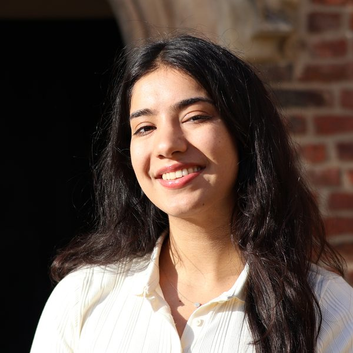
Ambika Grover
Ambika is a senior in Leverett House and the founder and director of the Harvard Undergraduate OpenBio Biosecurity Fellowship. Motivated by the imperative of biosecurity and the lack of a formal pathway for Harvard undergraduates to engage with the field, she created the fellowship as an avenue to help students explore and engage in biosecurity research and policy. She is thrilled to lead the second iteration of the fellowship!
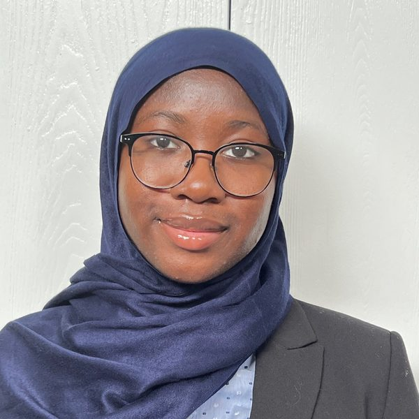
Hafeezat Ghaffar
Hafeezat is a sophomore in Mather, concentrating in Neuroscience and Statistics. She is passionate about neurodegenerative disease and conducts research with the Albers Lab at Mass General Brigham. She is also involved with the Harvard Undergraduate Black Health Advocates and Harvard Muslim Youth Program as a mentor and treasurer.
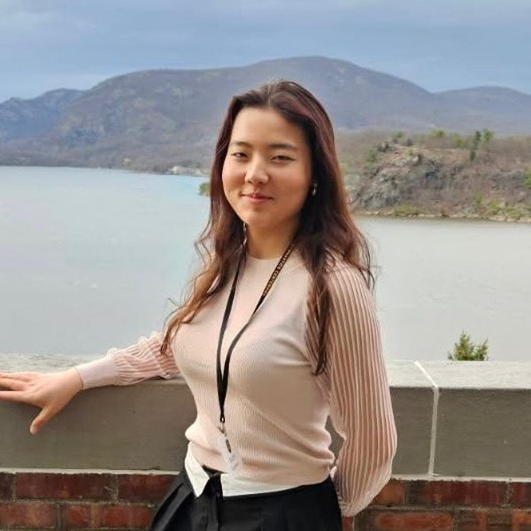
Audrey Creighton
Audrey Creighton is a junior at Harvard University majoring in bioengineering, serving as Social Director for the Fall 2026 iteration of the fellowship. Audrey is from Lexington, Massachusetts, and is passionate about biosecurity, computational biology, and biotechnology. In addition to her role with the OpenBio Biosecurity program, she takes part in Army ROTC, and conducts computational biology research in infectious diseases.
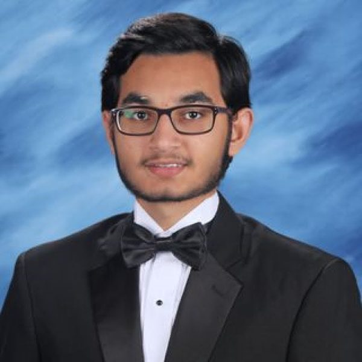
Sadiq Mubarak
Sadiq is a current sophomore at Harvard College planning to concentrate in Neuroscience with a Joint in Mathematics and a secondary in Global Health and Health Policy, serving as Curriculum Director this semester. He is especially interested in how quantitative tools can illuminate the brain biology and inform solutions toward global health challenges. Outside the classroom, he enjoys exploring ideas at the intersection of science, policy, and human impact.
Fall 2026 Fellows
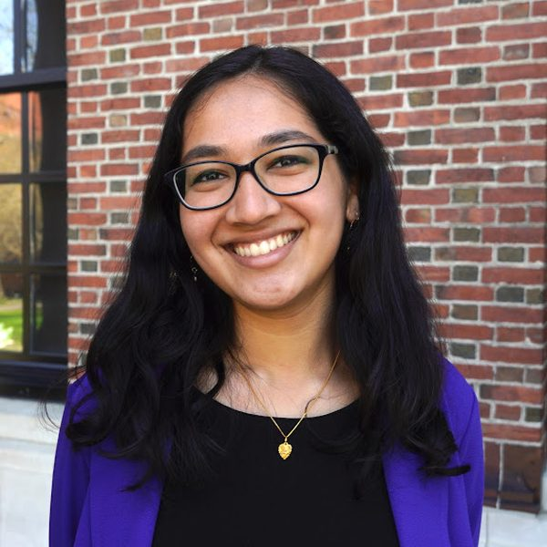
Hiral Chavre
Hiral is a senior in Pforzheimer House from Long Island, New York. She is studying Neuroscience with a secondary in English at Harvard and is invested in the intersection of STEM and policy. Outside of academics, Hiral works in Harvard Model Congress, serves as Peer Advising Fellow, and conducts research with the Phelps Lab. Hiral is excited to learn more about biosecurity through OpenBio's fellowship!
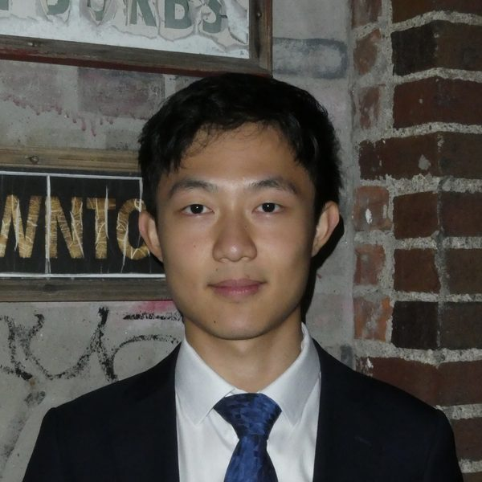
Toby Chen
Toby is a second year undergraduate studying Physics and Comparative Literature. He is interested in protein engineering, synthetic biology, and biomaterials. In his free time, he enjoys golf, poetry, and geocaching.
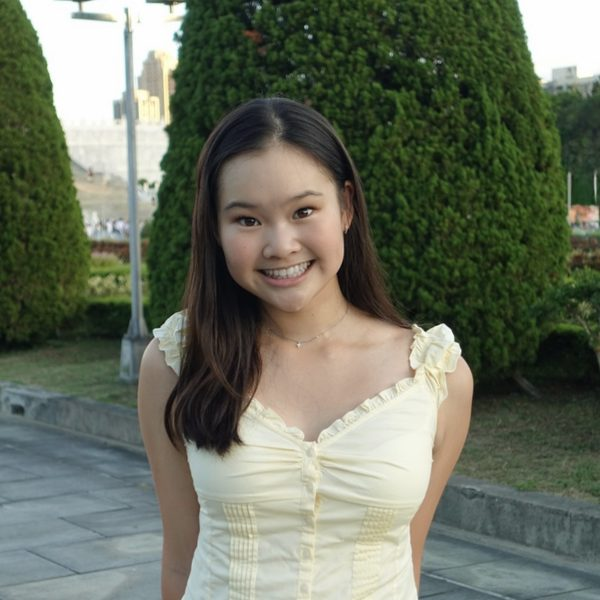
Sophie Hsu
Sophie is a freshman from Taiwan interested in studying computational neuroscience and philosophy. Her interests lie at the intersection of people and technology, and her past projects include building wearable devices for people with visual impairment. Outside of academics, she loves to run, surf, foodie, and read!
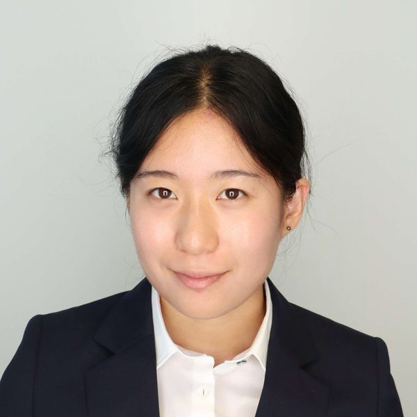
Moeka Koyama
Moeka is a Senior at Harvard College concentrating in Molecular and Cellular Biology and Linguistics. In her spare time, she enjoys reading and taking long walks.
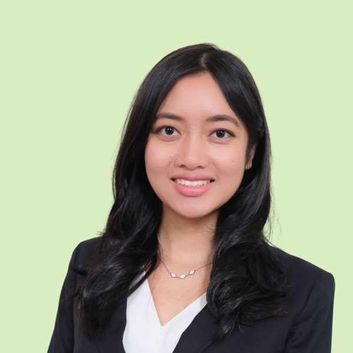
Myla Leung
Myla Leung is a sophomore in Adams House studying Economics and Integrative Biology. She has always been fascinated by the biological sciences, with research experience spanning synthetic biology focused on HSV-1 targeting colorectal cancer and parasitic disease research on schistosomiasis. She is also deeply interested in global health and finding ways to improve health outcomes at scale. She is especially excited to join the OpenBio Biosecurity Fellowship this year and explore the intersection of biology, health, and biosecurity, as well as how these fields intersect with other critical issues such as climate change and global health.
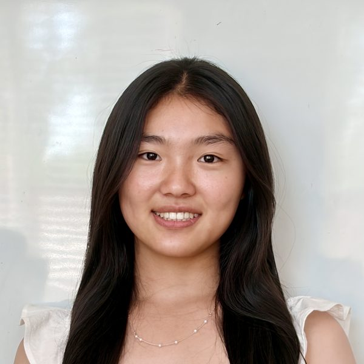
Irene Pan
Irene is a first-year at Harvard interested in concentrating in Computer Science and Neuroscience. She is passionate about using technology to improve healthcare and is interested in learning more about the intersection between science and society. In her free time, Irene loves to sing, draw, and when she has the chance - go backpacking in the outdoors!
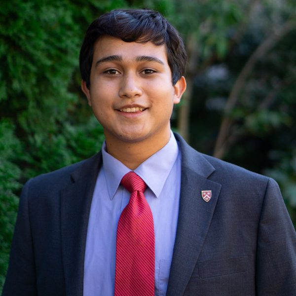
Xitiz Shakya
Xitiz is a current freshman from Arlington Massachusetts, planning to concentrate in electrical engineering. He is interested in learning more about the future possibilities of AI and how it can help advance science and engineering, but also the consequences of AI's advancement. Outside of academics and clubs, he loves watching football.
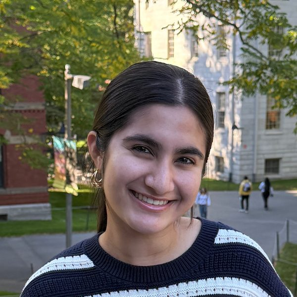
Salma Siddiqui
Salma is a junior double concentrating in Social Studies and Integrative Biology. She is passionate about the intersection of biotech, policy, and society. Her lab work includes developing an AI model to interpret spatial genomics data for early brain tumor detection.
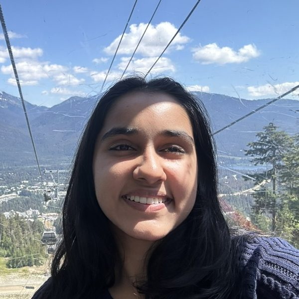
Suhani Singh
Suhani is a first-year at Harvard studying Neuroscience with a secondary in Global Health & Health Policy. Her previous work includes neuroimaging research on substance exposure and the adolescent brain, wet-lab protein biology and biochemistry research, and health policy advocacy around flavored tobacco restrictions in Washington state. Currently, she is especially interested in regenerative neurobiology, women's health, the glymphatic system, and neurotechnology/NeuroAI, alongside the biosecurity and bioethics questions emerging from advances in neuroscience and biotechnology. Outside of academics, she finds fulfillment in reading novels, writing, investigative journalism, crisis support, weightlifting, and spending quality time with loved ones.
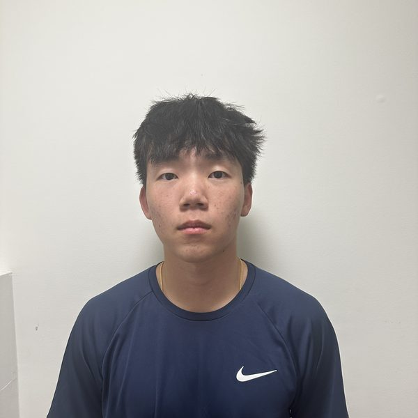
Feng Xue
Feng Xue is a freshman at Harvard who enjoys playing ping pong, swimming, and running. He is also taking part in NROTC and plans to commission in the Navy after medical school, if he gets in. He is also extremely interested in biology and how artificial intelligence will affect outcomes of biological research in the near future.
Join
The fellowship meets weekly during the semester, and no prior biosecurity experience is required. It is open to all Harvard College students, and applications for future cohorts will be announced here.
Questions? Contact ambikagrover [at] college.harvard.edu.